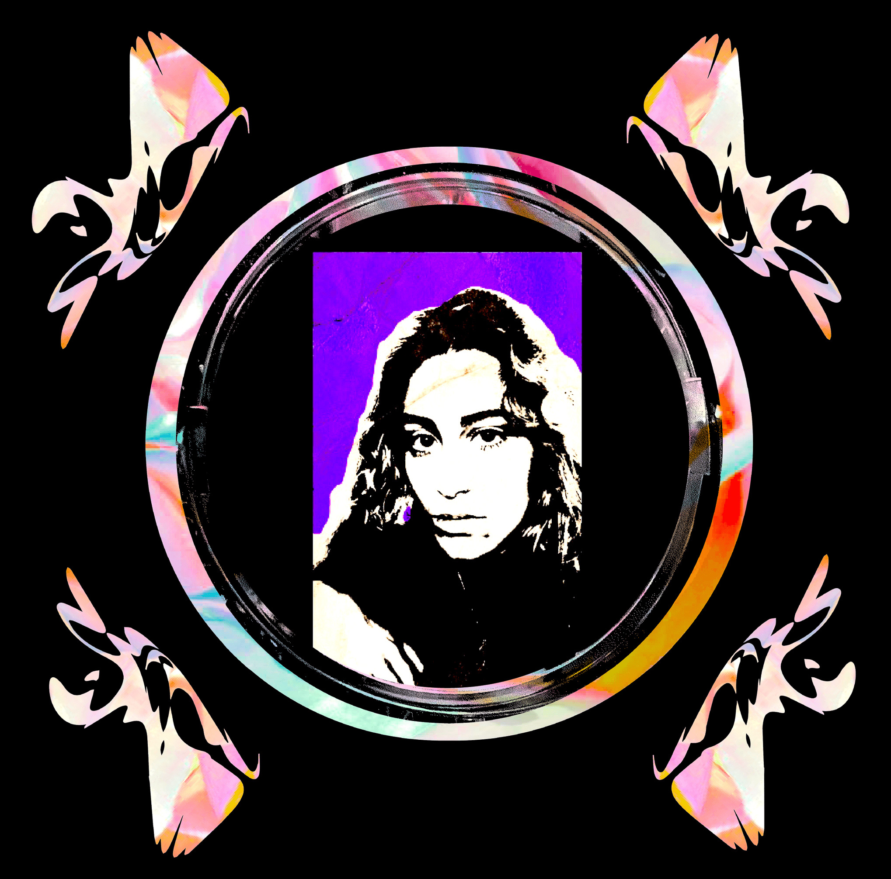

(2019 - 2022)
HND Communication
- Design and Multimedia ETIC,
Lisbon PT

Graphic and Communication Designer, based in Lisbon, Portugal.
Grew up in a family where the creative spirit, culture in general, and especially the visual arts and music are a daily presence. In a multidisciplinary and whimsical way, she uses design and illustration as a vehicle for her own artistic creation. She is also a visual artist, focusing mainly on editorial work, visual identities and illustration. Her creative process and the discipline to work independently are just as important as teamwork in a project environment where she can learn and contribute. She is also interested in putting into practice anything that can grow outside the limits of the screen.
🌷 🔮 ✨ 🫧 🍄 🧚♂️
EDUCATION
(2022 - 2023)
Bachelor Degree Graphic Design
- ETIC & Solent Univerity,
Lisbon PT
Bachelor Degree Graphic Design
- ETIC & Solent Univerity,
Lisbon PT
CONTACTS
salome.vasconcellos@gmail.com
CV upon email request
CV upon email request